Vicoli (PE) · Parco Fluviale del Nora
Casa Vacanze
Mulino
Brandolini
Un antico mulino ad acqua dell'Ottocento
Scorri
Vicoli (PE) · Parco Fluviale del Nora
Un antico mulino ad acqua dell'Ottocento
Storia e Radici
Ogni pietra di questo mulino porta il peso della storia. L'acqua del Nora ha mosso le macine per generazioni, scandendo il ritmo della vita contadina abruzzese. Oggi scorre ancora, ma porta con sé il racconto di chi è venuto prima.
— Gabriele Brandolini, quarta generazione
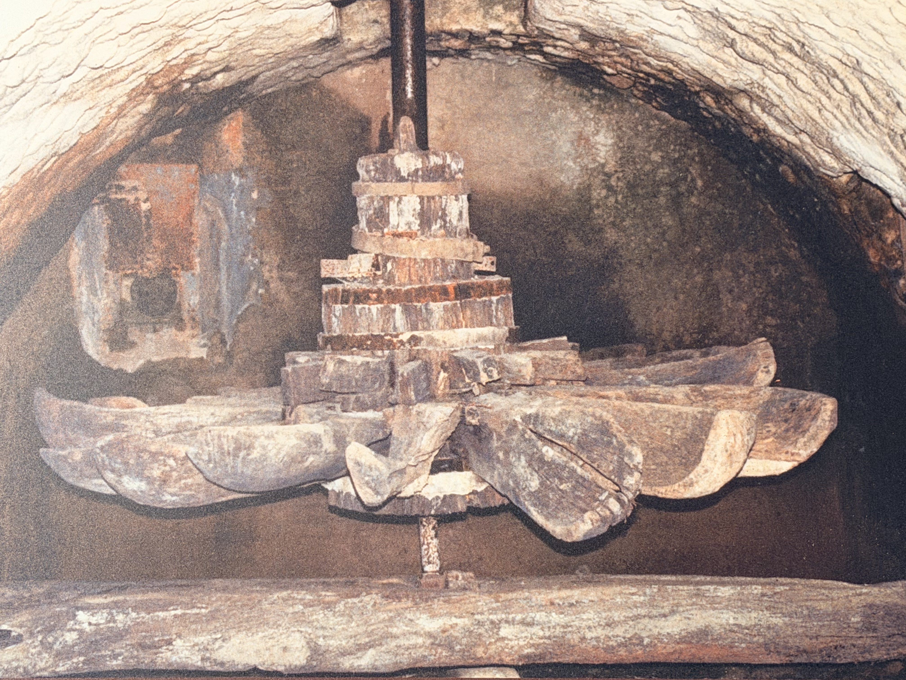

Nei primi anni dell'Ottocento, la famiglia Brandolini acquisisce il vecchio mulino ad acqua sul torrente Nora, avviando una storia di lavoro e dedizione durata oltre due secoli.
Per generazioni le macine macinano il grano delle famiglie di Vicoli e dei borghi vicini. La ruota d'acqua non si ferma mai — il suono del Nora si fonde con quello della farina.
La struttura viene accuratamente restaurata mantenendo intatti tutti i macchinari originali: macine, tramogge e ruota idraulica diventano un piccolo museo vivente visitabile dagli ospiti.
Cinque camere, piscina, giardino e il Parco fluviale del Nora alle porte. La storia si respira in ogni angolo, ma il comfort è quello di oggi.
Il Mulino Brandolini si trova a Vicoli, piccolo borgo della provincia di Pescara incastonato tra le colline abruzzesi. A poca distanza sorge il borgo di Vicoli Vecchio, racchiuso attorno all'antico castello su un panoramico poggio — raggiungibile a piedi attraverso un sentiero che porta al Parco Territoriale Attrezzato di Vicoli.
Nelle vicinanze, la Riserva regionale Voltigno e Valle d'Angri, area naturale protetta all'interno del Parco nazionale del Gran Sasso-Monti della Laga. E nei dintorni, l'Abbazia di San Bartolomeo, uno dei monumenti più pregevoli dell'arte medievale abruzzese cistercense.
A 15 minuti si trovano le piste di sci di fondo dello Sci Club Villa Celiera. La cucina del territorio — arrosticini, pecora alla "callara", pecorino stagionato — si assaggia negli agriturismi della zona che Gabriele sarà felice di consigliarvi.

"Siamo lieti di ospitarvi in questo piccolo gioiello storico e siamo sempre a vostra disposizione per rendere la vostra esperienza indimenticabile."
Gabriele Brandolini — ProprietarioLe Camere
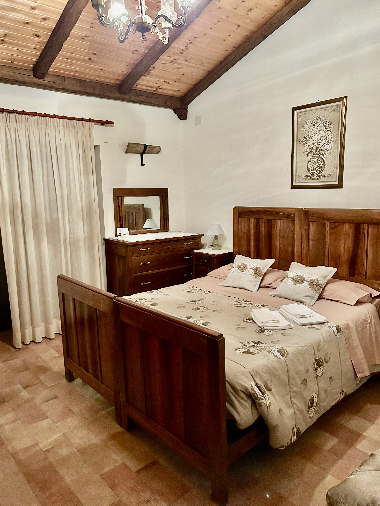

Ampia camera matrimoniale al piano superiore con letto matrimoniale, travi a vista e finestra affacciata sul verde circostante. Arredi in legno rustico che evocano l'atmosfera del mulino d'epoca, con tocchi di calore dati dai tessuti naturali.

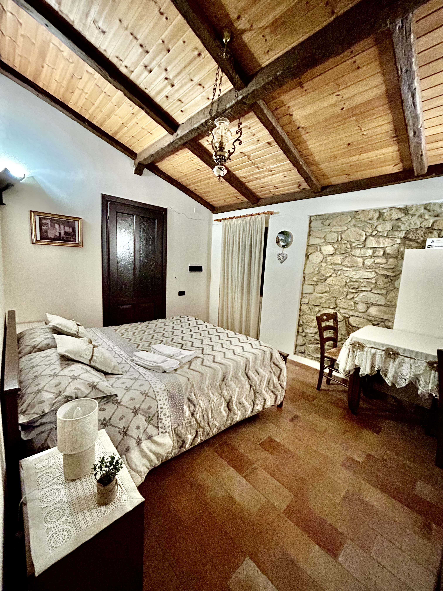
Seconda camera matrimoniale caratterizzata da un magnifico rivestimento in pietra a vista originale del mulino. Le travi in legno grezzo e la vista sul torrente Nora regalano un'atmosfera unica e autentica.

Camera con letto matrimoniale. Il soffitto a volta con travi in legno originali dell'Ottocento e la finestra panoramica sulle colline abruzzesi ne fanno un ambiente davvero speciale.
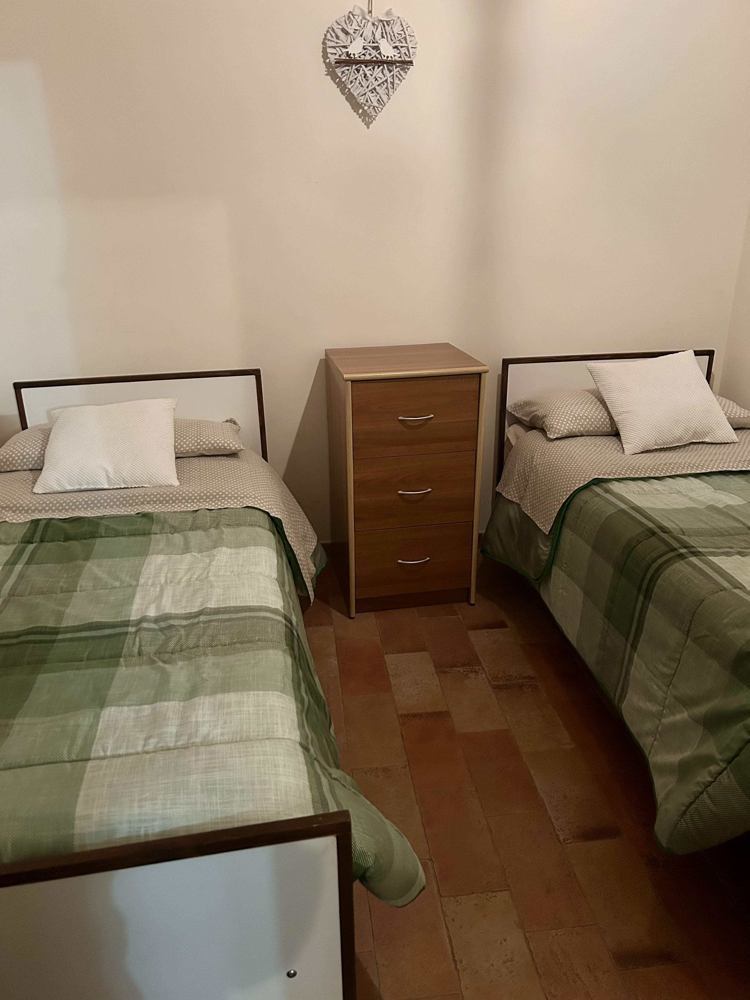
Camera singola o uso doppio con arredamento rustico abruzzese genuino. Perfetta per chi ama il relax in un contesto storico autentico.
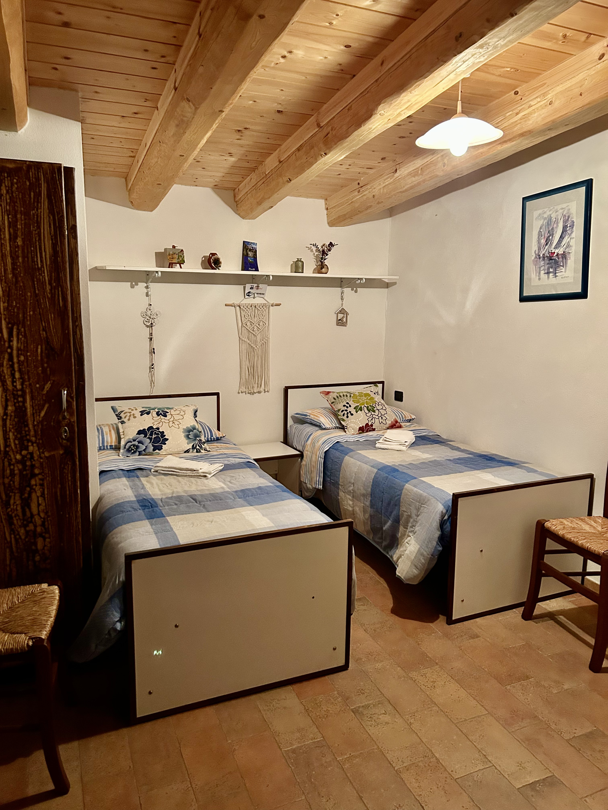
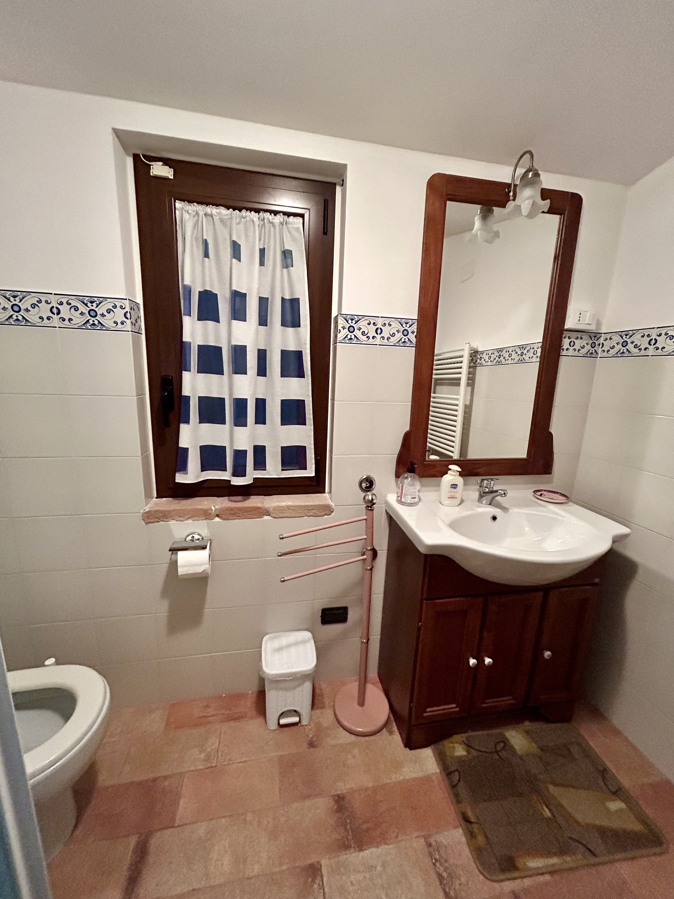
Camera doppia con letto matrimoniale, adatta a famiglie o piccoli gruppi. Bagno adiacente, soffitto con travatura originale
Spazi Comuni

Cucina completamente attrezzata con piano cottura, forno e tutto il necessario per preparare i piatti della tradizione abruzzese. Il camino a legna crea l'atmosfera giusta per le serate invernali più fredde.
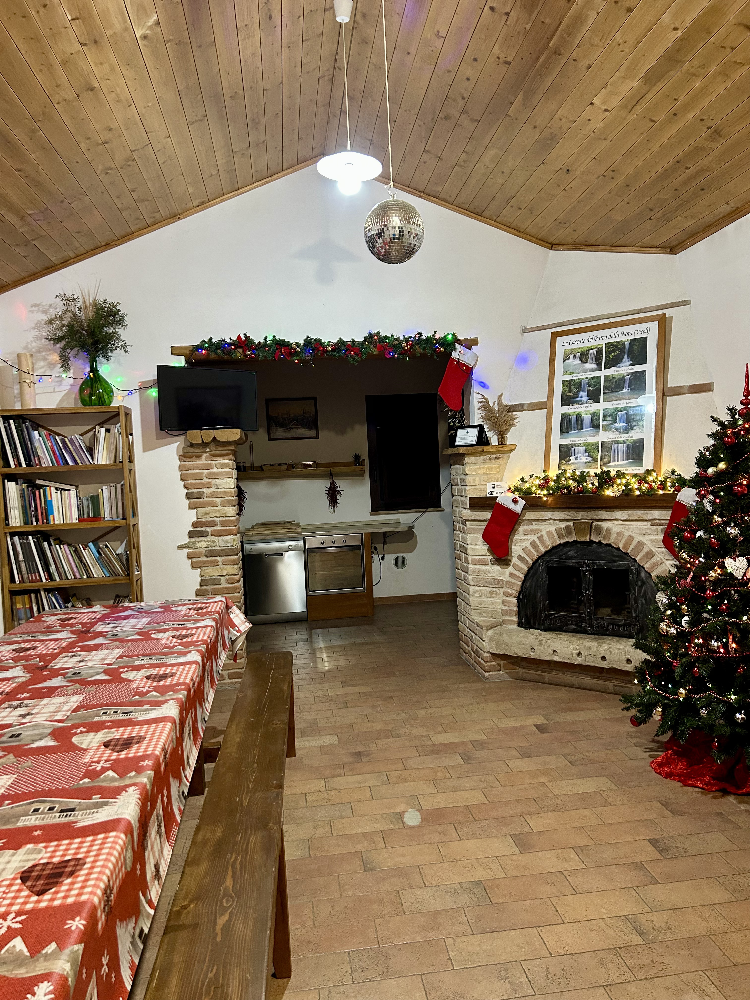
Grande salone con tavolo da pranzo per tutti gli ospiti, zona relax e TV. Il caminetto in pietra originale è il cuore della vita comune, ideale per le riunioni serali davanti al fuoco dopo una giornata all'aria aperta.

Il Territorio
Il Mulino Brandolini sorge sulla sponda del torrente Nora, nel cuore del Parco Fluviale che ne porta il nome. Qui l'acqua scorre limpida tra salici e pioppi secolari, creando cascate naturali e pozze cristalline che invitano alla contemplazione e al silenzio.
Il paesaggio circostante alterna boschi fitti a panorami aperti sulle colline abruzzesi, con sentieri naturalistici che partono direttamente dalla struttura.
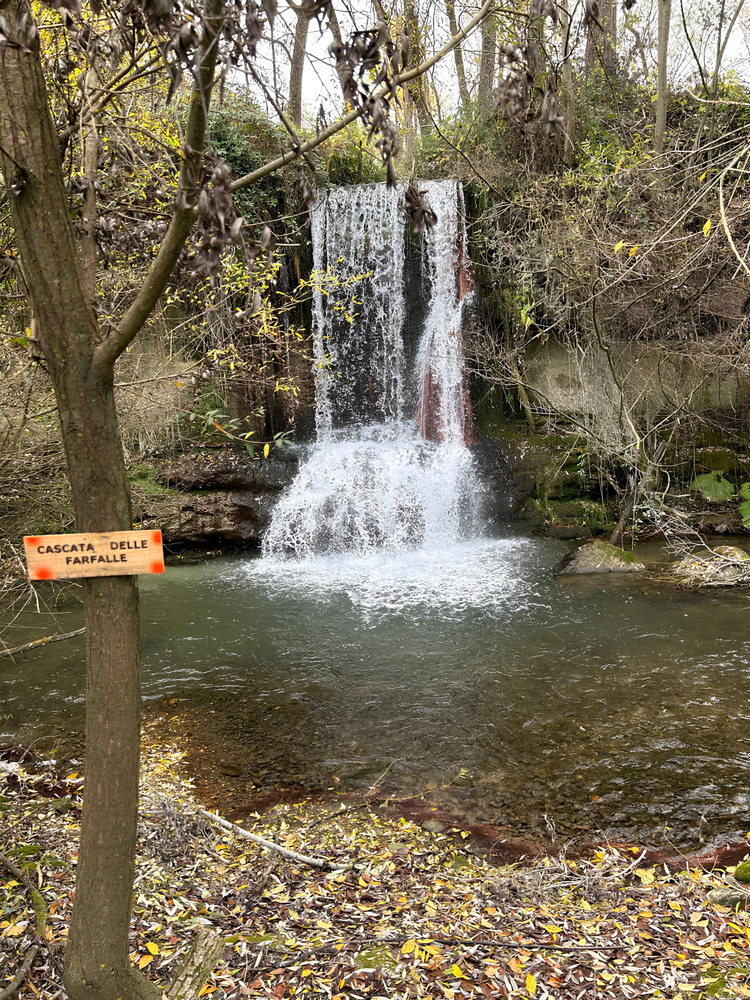
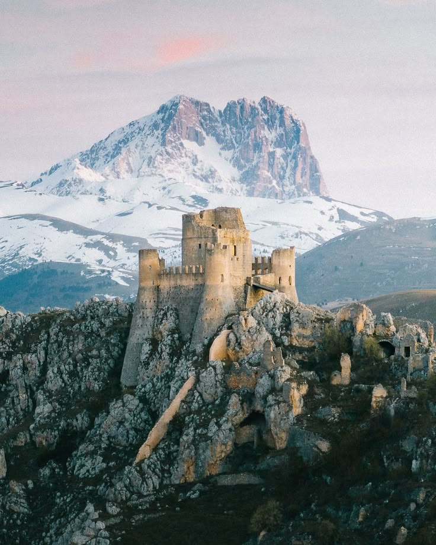

Galleria fotografica


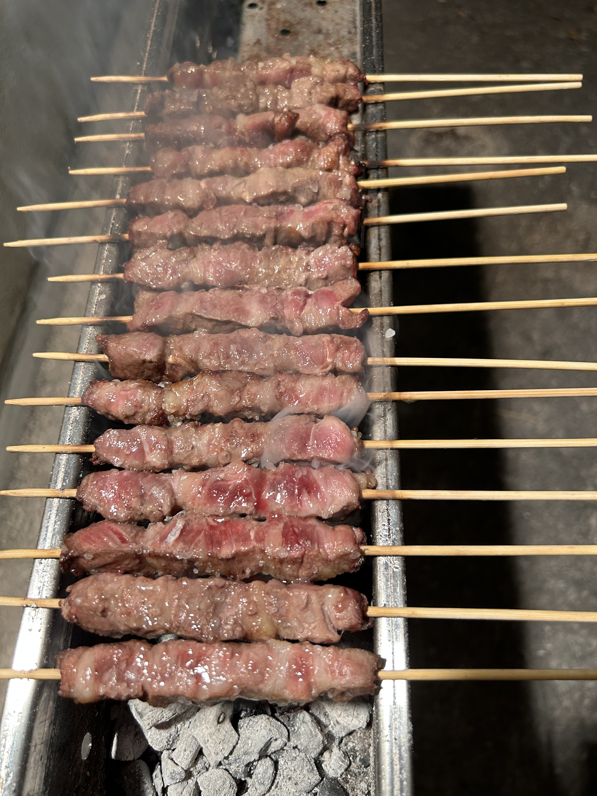
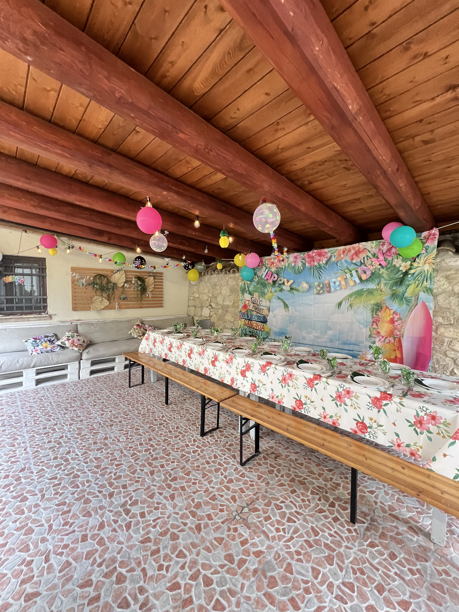
I nostri servizi
*La struttura viene affittata esclusivamente ad uso privato, garantendo totale privacy agli ospiti. Non è prevista la prenotazione di singole camere. Non sono ammessi animali.
Dintorni
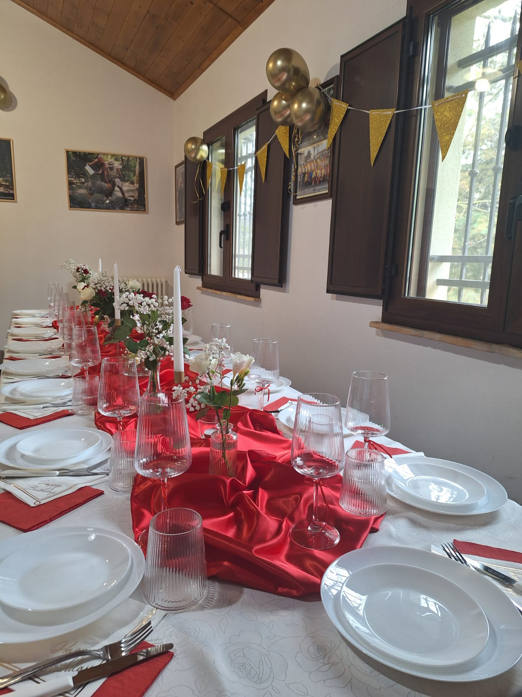
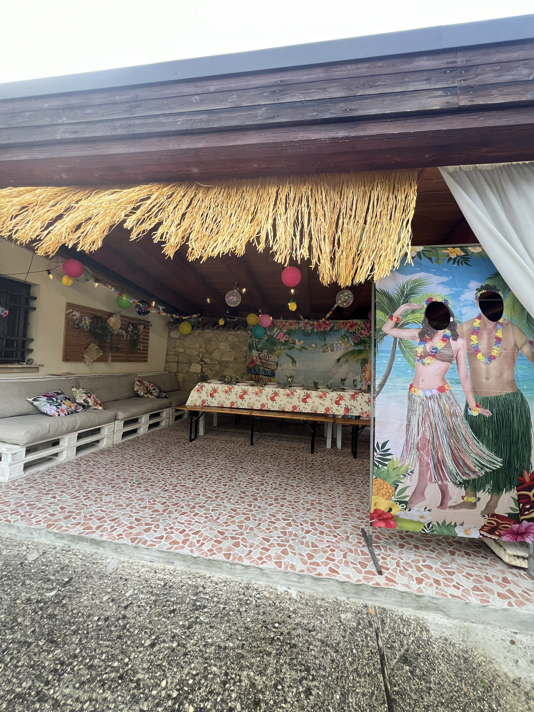
Il Mulino Brandolini è la cornice ideale per festeggiare il tuo compleanno in modo indimenticabile. Il portico in pietra, il giardino sul torrente, la piscina privata e il barbecue creano un'atmosfera unica tra storia e natura.
Recensioni degli ospiti
"Ampia struttura immersa nel verde nel quale abbiamo passato uno splendido weekend a cavallo di ferragosto. La casa è spaziosissima, ricca di tutti i comfort, ordinata e pulitissima."
"Ampia struttura in mezzo alla natura, il proprietario è gentilissimo e molto disponibile. La casa può accogliere fino a 10 persone, adatta ad accogliere gruppi. Cucina attrezzata, lavanderia con lavatrice, piscina con sdraio."
"Un mulino dell'Ottocento sul torrente Nora, con piscina e giardino privati. Il museo al piano terra è una sorpresa meravigliosa. Gabriele è un ospite di rara gentilezza. L'esperienza di dormire ascoltando l'acqua scorrere è impagabile."
Prenota subito
Disponibile su Booking.com e Airbnb — o contattaci direttamente per tariffe speciali, soggiorni personalizzati e affitto dell'intera villa per gruppi fino a 10 persone.
Contattaci
Lascia il tuo nome e numero di telefono — Gabriele ti ricontatterà personalmente per risponderti ad ogni domanda e aiutarti a organizzare il tuo soggiorno perfetto.
Vuoi organizzare una festa di compleanno indimenticabile?
Organizza il tuo compleanno da noi →Gabriele ti risponde personalmente entro poche ore